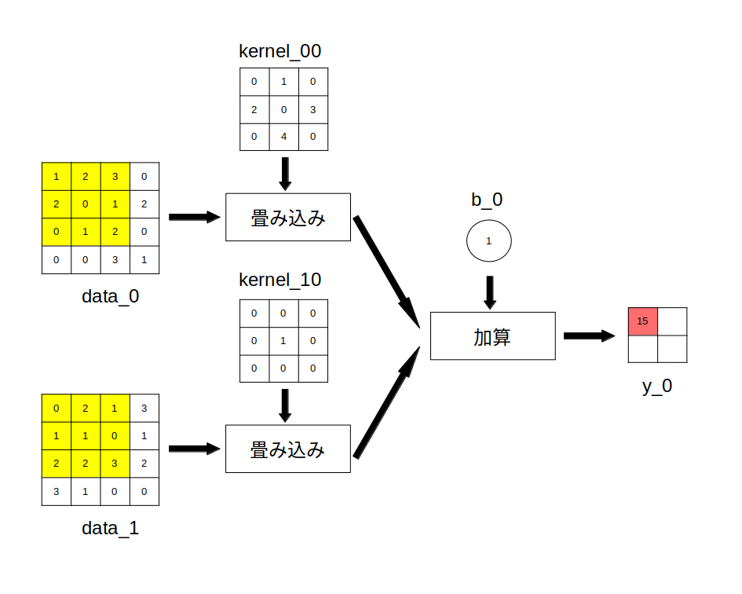
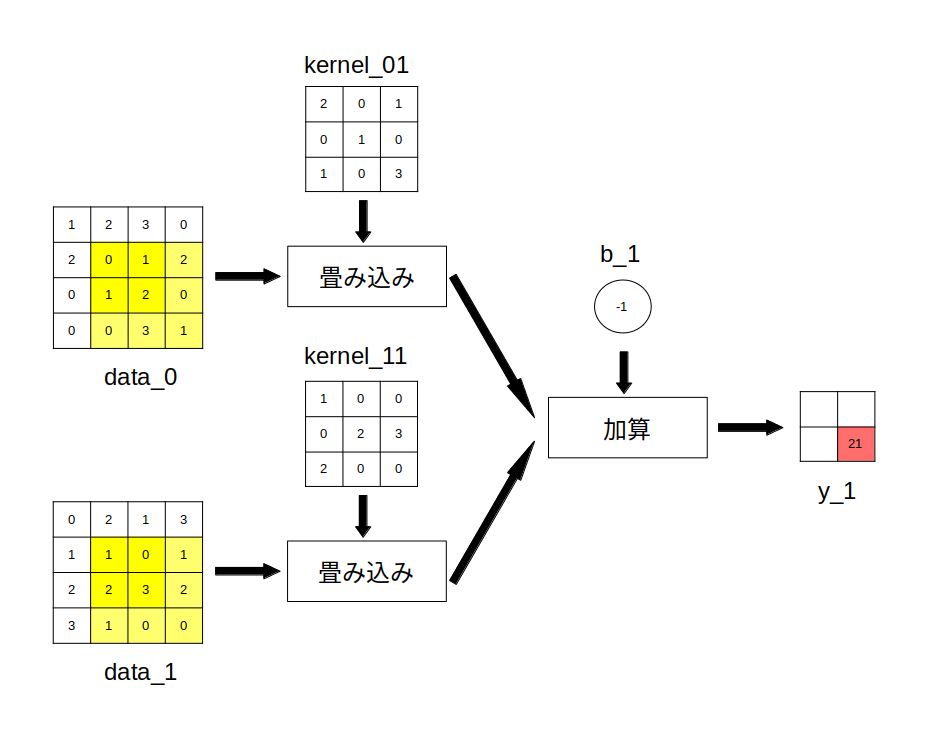

前ページで行った畳み込み演算はモノラル画像に対する演算でしたが、実際には多チャンネル画像の畳み込み演算が CNN では使われています。
多チャンネル画像とは何かイメージがつかないかもしれませんが、例えば RGB 画像は Redチャンネル、Greenチャンネル、Blueチャンネルの 3 チャンネル画像となります。
入力画像だけでなく、出力画像も多チャンネルになります。
まず入力画像のチャンネル数を Cin とすると、入力画像の m 番目のチャンネルは以下の行列 data_mで表されます。
なお画像サイズ( rows x cols )は全てのチャンネルで同一とします。
\[ {\rm data\_m} = \begin{bmatrix} d_{00}^m\ , & \cdots &,\ d_{\rm 0(cols-1)}^m \\ \vdots & \ddots & \vdots \\ d_{\rm (rows-1)0}^m\ , & \cdots &,\ d_{\rm (rows-1)(cols-1)}^m \end{bmatrix} \] \[ m=0,1,\cdots,{\rm Cin}-1 \]
次に出力画像のチャンネル数を Cout とすると、カーネルは入力画像と出力画像のチャンネル数に対応した数、つまり Cin x Cout 個分用意する必要があります。
入力画像の m 番目のチャンネルと出力画像の n 番目のチャンネルに対するカーネルを以下の行列 kernel_mn とします。
なおカーネルのサイズ(kernel_size)は固定とします。
\[ {\rm kernel\_mn} = \begin{bmatrix} k_{00}^{mn}\ , & \cdots &,\ k_{\rm 0(kernel\_size-1)}^{mn} \\ \vdots & \ddots & \vdots \\ k_{\rm (kernel\_size-1)0}^{mn}\ , & \cdots &,\ k_{\rm (kernel\_size-1)(kernel\_size-1)}^{mn} \end{bmatrix} \] \[ m=0,1,\cdots,{\rm Cin}-1\\ n=0,1,\cdots,{\rm Cout}-1 \]
またバイアスは出力画像のチャンネルごとに用意します。
出力画像の n 番目のチャンネルに対するバイアスを b_n ($n=0,1,\cdots,{\rm Cout}-1$) とします。
また出力画像の n 番目のチャンネルは以下の行列 y_nで表されます。
\[ {\rm y\_n} = \begin{bmatrix} y_{00}^n\ , & \cdots &,\ y_{\rm 0(cols-kernel\_size)}^n \\ \vdots & \ddots & \vdots \\ y_{\rm (rows-kernel\_size)0}^n \ , & \cdots &,\ y_{\rm (rows-kernel\_size)(cols-kernel\_size)}^n \end{bmatrix} \] \[ n=0,1,\cdots,{\rm Cout}-1 \]
すると多チャンネル画像に対する畳み込み演算は以下の様に定義されます。
\[ y_{ij}^n = \sum_{m=0}^{\rm Cin-1}\sum_{k=0}^{\rm kernel\_size-1}\sum_{l=0}^{\rm kernel\_size-1} k_{kl}^{mn} \cdot d_{(i+k)(j+l)}^m + b_n \\ n=0,1,\cdots,{\rm Cout}-1 \\ i=0,1,\cdots,({\rm rows-kernel\_size}) \\ j=0,1,\cdots,({\rm cols-kernel\_size}) \]
定義式だけ見せても良く分からないと思いますので具体例を示します。
まず入力画像は Cin = 2 チャンネルとし、各チャンネルは以下の 4x4 行列(rows = cols = 4)とします。
入力画像の 0 番目のチャンネル
\[ {\rm data\_0} = \begin{bmatrix} 1, & 2, & 3, & 0 \\ 2, & 0, & 1, & 2 \\ 0, & 1, & 2, & 0 \\ 0, & 0, & 3, & 1 \\ \end{bmatrix} \]入力画像の 1 番目のチャンネル
\[ {\rm data\_1} = \begin{bmatrix} 0, & 2, & 1, & 3 \\ 1, & 1, & 0, & 1 \\ 2, & 2, & 3, & 2 \\ 3, & 1, & 0, & 0 \\ \end{bmatrix} \]出力画像も Cout = 2 チャンネルとし、カーネルを以下の Cin x Cout = 4 個とします(kernel_size=3、値は適当に決めています)。
入力画像の 0 番目のチャンネルと出力画像の 0 番目のチャンネルに対するカーネル
\[ {\rm kernel\_00} = \begin{bmatrix} 0, & 1, & 0 \\ 2, & 0, & 3 \\ 0, & 4, & 0 \\ \end{bmatrix} \]入力画像の 0 番目のチャンネルと出力画像の 1 番目のチャンネルに対するカーネル
\[ {\rm kernel\_01} = \begin{bmatrix} 2, & 0, & 1 \\ 0, & 1, & 0 \\ 1, & 0, & 3 \\ \end{bmatrix} \]入力画像の 1 番目のチャンネルと出力画像の 0 番目のチャンネルに対するカーネル
\[ {\rm kernel\_10} = \begin{bmatrix} 0, & 0, & 0 \\ 0, & 1, & 0 \\ 0, & 0, & 0 \\ \end{bmatrix} \]入力画像の 1 番目のチャンネルと出力画像の 1 番目のチャンネルに対するカーネル
\[ {\rm kernel\_11} = \begin{bmatrix} 1, & 0, & 0 \\ 0, & 2, & 3 \\ 2, & 0, & 0 \\ \end{bmatrix} \]バイアスは次のようにします。
出力画像の 0 番目のチャンネルに対するバイアス
\[ \textrm{b_0} = 1 \]出力画像の 1 番目のチャンネルに対するバイアス
\[ \textrm{b_1} = -1 \]出力画像は以下の２チャンネルとなります。
\[ y\_0 = \begin{bmatrix} y_{00}^0, & y_{01}^0 \\ y_{10}^0, & y_{11}^0 \\ \end{bmatrix} \]
\[ y\_1 = \begin{bmatrix} y_{00}^1, & y_{01}^1 \\ y_{10}^1, & y_{11}^1 \\ \end{bmatrix} \]
この時、出力画像のチャンネル 0 の左上座標の画素値 $y_{00}^0$は定義式より次の様に計算されます。
\begin{align*} y_{00}^0 &= \sum_{m=0}^{1}\sum_{k=0}^{2}\sum_{l=0}^{2} k_{kl}^{m0} \cdot d_{(i+k)(j+l)}^m + b_0 \\ \\ &= k_{00}^{00}\cdot d_{00}^0 + k_{01}^{00}\cdot d_{01}^0 + k_{02}^{00}\cdot d_{02}^0 \\ &\ + k_{10}^{00}\cdot d_{10}^0 + k_{11}^{00}\cdot d_{11}^0 + k_{12}^{00}\cdot d_{12}^0 \\ &\ + k_{20}^{00}\cdot d_{20}^0 + k_{21}^{00}\cdot d_{21}^0 + k_{22}^{00}\cdot d_{22}^0 \\ \\ &\ + k_{00}^{10}\cdot d_{00}^1 + k_{01}^{10}\cdot d_{01}^1 + k_{02}^{10}\cdot d_{02}^1 \\ &\ + k_{10}^{10}\cdot d_{10}^1 + k_{11}^{10}\cdot d_{11}^1 + k_{12}^{10}\cdot d_{12}^1 \\ &\ + k_{20}^{10}\cdot d_{20}^1 + k_{21}^{10}\cdot d_{21}^1 + k_{22}^{10}\cdot d_{22}^1 \\ \\ &\ + b\_0 \\ \\ &= 0\cdot 1 + 1\cdot 2 + 0\cdot 3 \\ &\ + 2\cdot 2 + 0\cdot 0 + 3\cdot 1 \\ &\ + 0\cdot 0 + 4\cdot 1 + 0\cdot 2 \\ \\ &\ + 0\cdot 0 + 0\cdot 2 + 0\cdot 1 \\ &\ + 0\cdot 1 + 1\cdot 1 + 0\cdot 0 \\ &\ + 0\cdot 2 + 0\cdot 2 + 0\cdot 3 \\ \\ &\ + 1 \\ \\ &= 0 + 2 + 0 + 4 + 0 + 3 + 0 + 4 + 0 \\ &\ + 0 + 0 + 0 + 0 + 1 + 0 + 0 + 0 + 0 \\ &\ + 1 \\ \\ &= 15 \end{align*}目がチカチカしてきたので、以上で行った演算をまた図で示します。
data_0 と data_1 の黄色の部分の画素に対して畳み込み演算を行い、$y_{00}^0$ (赤い部分)の画素値を求めている
後は同様にして残りの画素値も計算出来ますが、参考までに $y_{11}^1$ を求めている図を以下に示します。
data_0 と data_1 の黄色の部分の画素に対して畳み込み演算を行い、$y_{11}^1$ (赤い部分)の画素値を求めている
出力画像は最終的に次の様に求まります。
\[ y\_0 = \begin{bmatrix} 15, & 18 \\ 9, & 19 \\ \end{bmatrix} \] \[ y\_1 = \begin{bmatrix} 16, & 14 \\ 34, & 21 \\ \end{bmatrix} \]